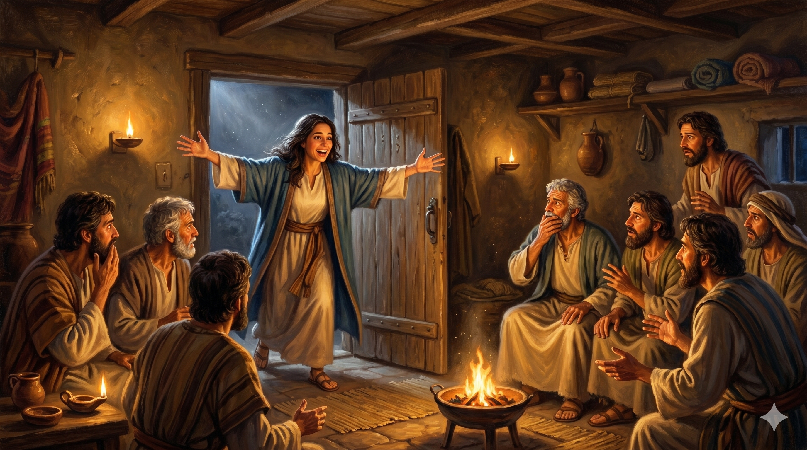

부활하신 주님께서 마리아에게 제자들에게로 가라 명하시는 장면 — 동산에 이른 아침빛이 내리쬐는 가운데, 마리아가 그 말씀을 가슴에 새기며 돌아서는 파견의 순간
"예수께서 이르시되 나를 붙들지 말라 내가 아직 아버지께로 올라가지 아니하였노라 너는 내 형제들에게 가서 이르되 내가 내 아버지 곧 너희 아버지, 내 하나님 곧 너희 하나님께로 올라간다 하라 하시니 막달라 마리아가 가서 제자들에게 내가 주를 보았다 하고 또 주께서 자기에게 이런 말씀을 하셨다 이르니라" — 요한복음 20:17-18
주님은 마리아에게 "나를 붙들지 말라"고 말씀하셨습니다. 이 말씀은 차갑게 밀어내는 거절이 아니었습니다. 오히려 마리아를 향한 더 큰 사명의 시작이었습니다. 주님은 곧 아버지께로 올라가실 것이었고, 그 전에 마리아에게 놀라운 임무를 맡기셨습니다. "내 형제들에게 가서 이르되 내가 내 아버지 곧 너희 아버지, 내 하나님 곧 너희 하나님께로 올라간다 하라." 이 말 속에는 십자가 이후 달라진 관계가 담겨 있습니다. 예수님은 하나님을 "내 아버지 곧 너희 아버지"라 부르심으로써, 제자들이 이제 하나님의 자녀로 부활의 은혜 안에 들어왔음을 선언하셨습니다.
마리아는 즉시 순종했습니다. 두려움도, 망설임도 없이 제자들에게로 달려가 선포했습니다. "내가 주를 보았다." 이 짧은 한 문장이 기독교 2천 년 역사에서 가장 강력한 증언 중 하나입니다. 복음은 논리가 아니라 만남에서 출발합니다. 마리아는 부활하신 주님을 직접 보았고, 그 체험이 그녀를 파견된 증인으로 세웠습니다. 초대교회는 마리아를 "사도들에게 파견된 사도"(Apostola Apostolorum)라 불렀습니다. 남성 제자들보다 먼저 부활을 목격하고, 먼저 전한 여인 — 그것이 하나님의 선택이었습니다.

마리아가 제자들에게 달려가 "내가 주를 보았다"고 증언하는 장면 — 다락방 안에 모여 있는 두려움에 찬 제자들과, 부활의 소식을 전하는 마리아의 확신에 찬 얼굴
주님은 마리아를 붙잡아 두지 않으셨습니다. 만남은 머무름이 아니라 파견으로 이어졌습니다. 주님을 경험한 사람은 그 경험을 혼자 간직하는 것이 아니라 나누도록 부름 받습니다. 오늘 우리가 예배드리고, 말씀을 읽고, 기도 중에 주님을 만나는 것은 그 자체로 끝이 아닙니다. 그 만남은 반드시 삶 속으로, 관계 속으로, 이웃에게로 흘러가야 합니다. 당신이 경험한 주님의 은혜를 오늘 주변 한 사람에게 나누십시오.
마리아의 증언은 "내가 들었다"가 아니라 "내가 보았다"였습니다. 직접적인 만남의 증언이었습니다. 신앙은 전해 들은 이야기가 아니라, 내가 직접 경험한 주님에 대한 이야기여야 합니다. 오늘 당신은 어떤 만남의 이야기를 가지고 있습니까? 지금 이 순간도 주님은 당신의 삶 속에서 당신과 만나고 계십니다. 그 만남을 놓치지 말고, 그것을 자신의 언어로 증언하는 삶을 사십시오.
"내가 주를 보았다" — 이것이 복음의 시작입니다.
당신에게도 그 만남이 있습니까?
만남은 반드시 증언으로 이어집니다.